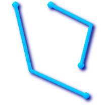
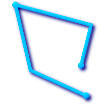
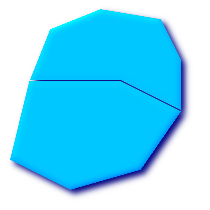
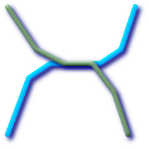

目次
PostGISでサポートされるGISオブジェクトは、OpenGIS Consortium(OGC)が定義する"Simple Features" のスーパーセットです。 PostGIS 0.9版からOGCの"Simple Features for SQL"仕様で定められた全てのオブジェクトと関数をサポートしています。
PostGISは標準から拡張して 3DZ, 3DM, 4D 座標(訳注: それぞれXYZ,XYM,XYZM)をサポートしています。
OpenGIS仕様は空間オブジェクトの表現について2つの標準を定義しています。Well-Knownテキスト(WKT)形式とWell- Knownバイナリ(WKB)形式です。WKTもWKBも、オブジェクトの型とオブジェクトを形成する座標に関する情報を持っています。
フィーチャーの空間オブジェクトのテキスト表現(WKT)の例は、次の通りです。
POINT(0 0)
LINESTRING(0 0,1 1,1 2)
POLYGON((0 0,4 0,4 4,0 4,0 0),(1 1, 2 1, 2 2, 1 2,1 1))
MULTIPOINT(0 0,1 2)
MULTILINESTRING((0 0,1 1,1 2),(2 3,3 2,5 4))
MULTIPOLYGON(((0 0,4 0,4 4,0 4,0 0),(1 1,2 1,2 2,1 2,1 1)), ((-1 -1,-1 -2,-2 -2,-2 -1,-1 -1)))
GEOMETRYCOLLECTION(POINT(2 3),LINESTRING(2 3,3 4))
OpenGIS仕様では、空間オブジェクトの内部保存書式は空間参照システム識別子(Spatial Referencing System IDentifier, SRID)を含むことも求められます。SRIDはデータベースへの挿入のために空間オブジェクトが生成される時に求められます。
これらの書式の入出力は次のインタフェースを用いて実現できます。
bytea WKB = ST_AsBinary(geometry); text WKT = ST_AsText(geometry); geometry = ST_GeomFromWKB(bytea WKB, SRID); geometry = ST_GeometryFromText(text WKT, SRID);
たとえば、OGC空間オブジェクトを生成して挿入する妥当なINSERTステートメントは次の通りです。
INSERT INTO geotable ( the_geom, the_name )
VALUES ( ST_GeomFromText('POINT(-126.4 45.32)', 312), 'A Place');OGC書式は2次元ジオメトリしかサポートされておらず、また、入出力の表現においてSRID群は*決して*埋め込まれません。
PostGIS拡張書式は現在のところOGC書式のスーパーセットとなっています (全ての妥当なWKB/WKTは妥当なEWKB/EWKTです)。しかし、特にもしOGCがPostGIS拡張と矛盾する新しい書式を出すことがあるなら、これは将来変更されるかも知れません。ゆえにこの機能に頼るべきではありません。
PostGIS EWKB/EWKT では 3dm, 3dz, 4d の座標サポートが追加され、SRID情報が埋め込まれます。
フィーチャーの拡張空間オブジェクトのテキスト表現(EKWT)の例は次の通りです。
POINT(0 0 0) -- XYZ
SRID=32632;POINT(0 0) -- XY with SRID
POINTM(0 0 0) -- XYM
POINT(0 0 0 0) -- XYZM
SRID=4326;MULTIPOINTM(0 0 0,1 2 1) -- XYM with SRID
MULTILINESTRING((0 0 0,1 1 0,1 2 1),(2 3 1,3 2 1,5 4 1))
POLYGON((0 0 0,4 0 0,4 4 0,0 4 0,0 0 0),(1 1 0,2 1 0,2 2 0,1 2 0,1 1 0))
MULTIPOLYGON(((0 0 0,4 0 0,4 4 0,0 4 0,0 0 0),(1 1 0,2 1 0,2 2 0,1 2 0,1 1 0)),((-1 -1 0,-1 -2 0,-2 -2 0,-2 -1 0,-1 -1 0)))
GEOMETRYCOLLECTIONM( POINTM(2 3 9), LINESTRINGM(2 3 4, 3 4 5) )
MULTICURVE( (0 0, 5 5), CIRCULARSTRING(4 0, 4 4, 8 4) )
POLYHEDRALSURFACE( ((0 0 0, 0 0 1, 0 1 1, 0 1 0, 0 0 0)), ((0 0 0, 0 1 0, 1 1 0, 1 0 0, 0 0 0)), ((0 0 0, 1 0 0, 1 0 1, 0 0 1, 0 0 0)), ((1 1 0, 1 1 1, 1 0 1, 1 0 0, 1 1 0)), ((0 1 0, 0 1 1, 1 1 1, 1 1 0, 0 1 0)), ((0 0 1, 1 0 1, 1 1 1, 0 1 1, 0 0 1)) )
TRIANGLE ((0 0, 0 9, 9 0, 0 0))
TIN( ((0 0 0, 0 0 1, 0 1 0, 0 0 0)), ((0 0 0, 0 1 0, 1 1 0, 0 0 0)) )
これらの書式の入出力は次のインタフェースを用いて実現できます。
bytea EWKB = ST_AsEWKB(geometry); text EWKT = ST_AsEWKT(geometry); geometry = ST_GeomFromEWKB(bytea EWKB); geometry = ST_GeomFromEWKT(text EWKT);
たとえば、PostGISの空間オブジェクトを作成し挿入する妥当なINSERTステートメントは次の通りです。
INSERT INTO geotable ( the_geom, the_name )
VALUES ( ST_GeomFromEWKT('SRID=312;POINTM(-126.4 45.32 15)'), 'A Place' )PostgreSQLの「標準的な形式」は単純なクエリ(全く関数呼び出しが無い)で表現でできていて、INSERT, UPDATE, COPYで受け付けられることが保障されるものです。PostGISの"geometory"型の場合は次の通りです。
- Output - binary: EWKB ascii: HEXEWKB (EWKB in hex form) - Input - binary: EWKB ascii: HEXEWKB|EWKT
たとえば、このステートメントは、標準的なASCII文字列による入出力の処理でEWKTを読み、HEXEWKBを返すものです。
=# SELECT 'SRID=4;POINT(0 0)'::geometry; geometry ---------------------------------------------------- 01010000200400000000000000000000000000000000000000 (1 row)
SQLマルチメディア・アプリケーション空間仕様は、円弧補完曲線を定義したSQL仕様の拡張です。
TSQL-MMの定義では、3dm、3dzと4dの座標を含みますが、SRID情報の埋め込みはできません。
WKT拡張はまだ完全にはサポートされていません。単純な曲線ジオメトリの例を次に示します。
CIRCULARSTRING(0 0, 1 1, 1 0)
CIRCULARSTRING(0 0, 4 0, 4 4, 0 4, 0 0)
CIRCULARSTRINGは基本的な曲線型で、LINESTRINGに似ています。ひとつのセグメントで、始点、終点(一つめと三つめ)と弧上の任意の点、の3点が必要です。例外として、始点と終点が同じとなる閉曲線があります。閉曲線では2つめの点が弧の中心、すなわち円の反対側にならなければなりません。弧の連結では、LINESTRINGと同じように、前の弧の最後の点が次の弧の最初の点となります。よって、妥当なCIRCULARSTRINGは1以上の奇数になります。
COMPOUNDCURVE(CIRCULARSTRING(0 0, 1 1, 1 0),(1 0, 0 1))
複合曲線は、曲線(円弧)セグメントと線型セグメントの両方を持つ、単一の連続した曲線です。 よって、要素が的確である必要があることに加え、各要素(最終要素は除く)の終点は次の要素の始点と同じになる必要があります。
CURVEPOLYGON(CIRCULARSTRING(0 0, 4 0, 4 4, 0 4, 0 0),(1 1, 3 3, 3 1, 1 1))
曲線ポリゴンの中に複合ポリゴンがある例は次の通りです。 CURVEPOLYGON(COMPOUNDCURVE(CIRCULARSTRING(0 0,2 0, 2 1, 2 3, 4 3),(4 3, 4 5, 1 4, 0 0)), CIRCULARSTRING(1.7 1, 1.4 0.4, 1.6 0.4, 1.6 0.5, 1.7 1) )
CURVEPOLYGONは外環と0以上の内環とを持つ点でPOLYGONと似ています。 異なる点は、環に曲線ストリング、線型ストリング、複合ストリングのいずれも取れる点です。
PostGIS 1.4から、PostGISで曲線ポリゴンで複合曲線をサポートするようになりました。
MULTICURVE((0 0, 5 5),CIRCULARSTRING(4 0, 4 4, 8 4))
MULTICURVEは曲線のコレクションで、線型ストリング、曲線ストリング、複合ストリングを取れます。
MULTISURFACE(CURVEPOLYGON(CIRCULARSTRING(0 0, 4 0, 4 4, 0 4, 0 0),(1 1, 3 3, 3 1, 1 1)),((10 10, 14 12, 11 10, 10 10),(11 11, 11.5 11, 11 11.5, 11 11)))
サーフェスのコレクションです。(線型)ポリゴンか曲線ポリゴンを取れます。
![[注記]](images/note.png) | |
PostGIS 1.4より前では、曲線ポリゴンで複合曲線をサポートしていませんでしたが、PostGIS 1.4以降は曲線ポリゴンでの複合曲線の使用をサポートするようになりました。 |
| |
SQL-MM実装での全ての浮動小数点数の比較では、所定の丸め誤差があります。現在は1E-8です。 |
ジオグラフィ型は、「地理」座標(しばしば「測地」座標、"lat/lon", "lon/lat", 緯度経度, 経度緯度などとも呼ばれます)上で表現された空間フィーチャーのネイティブサポートするためのものです。地理座標は角度の単位(度)で合わさられる球面座標です。
PostGISジオメトリ型の基礎は平面です。平面上の二点間の最短コースは直線になります。よって、ジオメトリ上の計算(面積、距離、長さ、インタセクション等)は、デカルト座標と線型ベクトルを使用することができます。
PostGISのジオグラフィ型の基礎は球面です。球面上での二点間の最短距離は大圏の弧です。よって、ジオグラフィ上の計算(面積、距離、長さ、インタセクション等)は、球面上で計算しなければならず、複雑な計算が必要となります。より正確な計測のためには、世界の実際の回転楕円体の形を考慮に入れなければならず、非常に複雑です。
基礎となる数学が大変に複雑なので、ジオグラフィ型用に定義された関数は、ジオメトリ型よりも少ないです。時間とともに、新しいアルゴリズムが追加されて、ジオグラフィ型の能力は拡大していくでしょう。
WGS84経度緯度(SRID:4326)のみサポートしているという制限があります。GEOGRAPHYと呼ばれる新しいデータ型を使用します。GEOS関数にこの新しい型をサポートする関数がありません。回避策として、ジオメトリとジオグラフィの型変換を行うことができます。
ジオグラフィ型はPostgreSQL 8.3以上のtypmod定義書式を使います。ジオグラフィカラムを持つテーブルに1ステップで追加できます。標準OGC書式は曲線を除いてサポートします。
ジオグラフィ型は簡単なフィーチャーの最も簡単なもののみサポートします。標準的なジオメトリ型データで、SRIDが4326の場合は、ジオグラフィに自動でキャストされます。またEWKTとEWKBの取り決めを使うこともできます。
POINT: 2次元のポイントジオメトリを持つテーブルの作成は次の通りです。
CREATE TABLE testgeog(gid serial PRIMARY KEY, the_geog geography(POINT,4326) );
Z値を持つポイントの場合は次の通りです。
CREATE TABLE testgeog(gid serial PRIMARY KEY, the_geog geography(POINTZ,4326) );
LINESTRING
POLYGON
MULTIPOINT
MULTILINESTRING
MULTIPOLYGON
GEOMETRYCOLLECTION
新しいジオグラフィカラムはgeometry_columnsに登録されません。システムカタログを見るgeography_columnsという新しいビューに登録されるので、AddGeom... といった関数を使わずに、自動管理されます。
"geography_columns"ビューをチェックして、テーブルが一覧にあるか見て下さい。
CREATE TABLEでジオグラフィカラムを持つテーブルを作ることができます。ジオメトリと違って、AddGeometryColumns()でメタデータにカラム情報を登録する処理を別に行う必要がなくなりました。
CREATE TABLE global_points (
id SERIAL PRIMARY KEY,
name VARCHAR(64),
location GEOGRAPHY(POINT,4326)
);
locationカラムはGEOGRAPHY型で、2つのオプション修飾子をサポートすることにご注意ください。ひとつは、そのカラムで使用できる形状と次元を限定する型修飾子です。もうひとつは、座標参照IDを特定の数に限定するSRID修飾子です。
型修飾子で許される値はPOINT, LINESTRING, POLYGON, MULTIPOINT, MULTILINESTRING, MULTIPOLYGONです。この修飾子ではZ, M, ZMの拡張子によって次元を限定します。たとえば、'LINESTRINGM'という値では、3次元で、第3次元が計測値(measure)となります。同じように見て 'POINTZM' は、4次元となります。
SRID修飾子には、現在は4326(WGS84)のみ許されるという制限があります。SRIDを指定したくない場合は0(未定義の回転楕円体)を使います。この場合の全ての計算は、WGS84とします。
将来的には、他のSRIDによって、WGS84以外の回転楕円体に関する計算ができるようにします。
テーブルを作ったら、次のようにしてGEOGRAPHY_COLUMNSを見ることができます。
-- メタデータビューの中身を見る SELECT * FROM geography_columns;
ジオメトリカラムを使うのと同じようにテーブルへのデータの挿入ができます。
-- testテーブルへのデータの追加
INSERT INTO global_points (name, location) VALUES ('Town', ST_GeographyFromText('SRID=4326;POINT(-110 30)') );
INSERT INTO global_points (name, location) VALUES ('Forest', ST_GeographyFromText('SRID=4326;POINT(-109 29)') );
INSERT INTO global_points (name, location) VALUES ('London', ST_GeographyFromText('SRID=4326;POINT(0 49)') );GEOMETRYと同じ操作でインデクスを作成します。PostGISは、カラム型がGEOGRAPHYであるかを見て、GEOMETRYで使われる平面用インデクスの代わりに球面ベースのインデクスを作成します。
-- testテーブルに球面インデクスを作成 CREATE INDEX global_points_gix ON global_points USING GIST ( location );
クエリと計測関数はメートル単位となります。そのため距離パラメータはメートル(面積の場合は平方メートル)単位となります。
-- 距離クエリの表示。ロンドンは1000km範囲外です。
SELECT name FROM global_points WHERE ST_DWithin(location, ST_GeographyFromText('SRID=4326;POINT(-110 29)'), 1000000);
GEOGRAPHYの威力については、シアトルからロンドンまで(LINESTRING(-122.33 47.606, 0.0 51.5))の飛行機がレイキャビク(POINT(-21.96 64.15))に最も近くなるときの距離を求めてみると分かります。
-- GEOGRAPHYを使った距離計算 (122.2km)
SELECT ST_Distance('LINESTRING(-122.33 47.606, 0.0 51.5)'::geography, 'POINT(-21.96 64.15)':: geography);
-- GEOMETRYを使った計算 (13.3"度")
SELECT ST_Distance('LINESTRING(-122.33 47.606, 0.0 51.5)'::geometry, 'POINT(-21.96 64.15)':: geometry);
GEOGRAPHY型は、レイキャビクとシアトル-ロンドン間の飛行機の大圏コースとの間の、球面上での本当に最も近い距離を計算します。
大圏コースマップ GEOMETRY型は、平面の世界地図上にプロットされたレイキャビクとシアトル-ロンドン間の直線とのデカルト距離という意味のない値を出します。結果の名目上の単位は「度」ですが、点間の本当の角度差にあっていませんので、「度」と言うこと自体不正確です。
GEOGRAPHY型によって、経度緯度座標でデータを格納できるようになりましたが、 GEOGRAPHYで定義されている関数が、GEOMETRYより少ないのと、実行にCPU時間がかかる、というところが犠牲になっています。
選択した型が、期待する領域から出ないことを、ジオメトリ型にして使用する条件とすべきです。使用するデータは地球全体か、大陸か、州か、自治体か?
データが小さいエリア内におさまるなら、適切な投影を選択してGEOMETRYを使うのが、効率面でも機能面でも最も良い方法です。
データが地球全体か大陸なら、GEOGRAPHYで投影法の細かい問題を気にせずにシステムを構築できるでしょう。経度/緯度のデータを保存して、GEOGRAPHYで定義された関数使います。
投影法を理解していなくて、学習したくもなくて、かつ、GEOGRAPHYで使える関数が限られていることを受け入れるのなら、GEOGRAPHYを使った方が簡単です。単にデータを経度緯度でロードして、そこから進めて下さい。
ジオグラフィとジオメトリ間のサポート状況の比較については「PostGIS関数対応マトリクス」をご覧下さい。ジオグラフィ関数の簡潔なリストと説明については「PostGISジオグラフィ対応関数」をご覧下さい。
- 4.2.3.1. 球または回転楕円体のどちらで計算するのでしょうか?
- 4.2.3.2. 日付変更線や極に関してはどうなっていますか?
- 4.2.3.3. 弧の処理の最大長はどうなりますか?
- 4.2.3.4. なぜヨーロッパやロシアといった大きな範囲の面積計算はとても遅いのですか?
OpenGISの「SQL用シンプルフィーチャー仕様」では、標準GISオブジェクト型とこれらを操作するために必要な関数、メタデータテーブルのセットが定義されています。メタデータが一貫性を維持していることを保証するために、空間カラムの生成、消去といった操作はOpenGISで定義されている空間プロシージャを通して実行されます。
OpenGISメタデータテーブルにはSPATIAL_REF_SYSとGEOMETRY_COLUMNSの2つあります。SPATIAL_REF_SYSテーブルは空間データベースで用いられる座標系の、数字によるIDと文字による説明を持っています。
spatial_ref_sysテーブルは、PostGISに含まれるもので、3000以上の空間参照系を持つ、OGC準拠のデータベーステーブルです。これらの間での変換/投影変換に必要です。
PostGISのspatial_ref_sysテーブルには、projライブラリで使われる3000以上の一般に使われる空間参照系定義がありますが、全てを持っているわけではなく、projライブラリの構築に慣れているならカスタム投影を定義することができます。ほとんどの空間参照系は地域限定のもので、想定されている範囲の外で使うと意味が無いことに注意して下さい。
PostGISのコアセットに入っていない空間参照系を探すための素晴らしい資料がhttp://spatialreference.org/にあります。
よく共通的に使われる空間参照系は次の通りです(訳注: 日本では状況が異なります)。4326 - WGS 84経度緯度, 4269 - NAD 83経度緯度, 3395 - WGS 84メルカトル図法, 2163 - 米国ナショナルアトラス正積図法, NAD83, WGS84 UTMの空間参照系 - UTMゾーンは計測に最も理想的なもののひとつですが6度(訳注: 経度を指します)の領域しかカバーしません。
さまざまな米国の州の平面空間参照系(メートルまたはフィート単位) - 通常は州ごとに一つか二つあります。メートル単位のもののほとんどがPostGISのコアセットに入っていますが、多数のフィート単位のものやESRIが作ったものについてはspatialreference.orgから取得して下さい。
対象領域がどのUTMゾーンになるかを決めるには、utmzone PostGIS plpgsql helper functionを参照して下さい。
SPATIAL_REF_SYSテーブル定義は次の通りです。
CREATE TABLE spatial_ref_sys ( srid INTEGER NOT NULL PRIMARY KEY, auth_name VARCHAR(256), auth_srid INTEGER, srtext VARCHAR(2048), proj4text VARCHAR(2048) )
SPATIAL_REF_SYSのカラムは次の通りです。
- SRID
一意に定められた整数値で、データベースで空間参照系(SRS)を識別するものです。
- AUTH_NAME
その参照系の引用元である標準の名前です。たとえば「EPSG」は妥当な
AUTH_NAMEです。- AUTH_SRID
AUTH_NAMEで引用される団体によって定義された空間参照系のIDです。EPSGの場合、EPSG投影コードが入ります。- SRTEXT
空間参照系のWell-Knownテキスト表現です。たとえば、WKT SRSの表現は、次のようになります。
PROJCS["NAD83 / UTM Zone 10N", GEOGCS["NAD83", DATUM["North_American_Datum_1983", SPHEROID["GRS 1980",6378137,298.257222101] ], PRIMEM["Greenwich",0], UNIT["degree",0.0174532925199433] ], PROJECTION["Transverse_Mercator"], PARAMETER["latitude_of_origin",0], PARAMETER["central_meridian",-123], PARAMETER["scale_factor",0.9996], PARAMETER["false_easting",500000], PARAMETER["false_northing",0], UNIT["metre",1] ]
EPSG投影コードと対応するWKT表現の一覧については、http://www.opengeospatial.org/をご覧下さい。WKTの一般的な議論については、OpenGISの「座標変換サービス実装仕様」http://www.opengeospatial.org/standardsをご覧下さい。欧州石油調査グループ(European Petroleum Survey Group, EPSG)とEPSG空間参照系のデータベースに関する情報は、http://www.epsg.orgをご覧下さい。
- PROJ4TEXT
PostGISは座標変換機能を提供するためにProj4ライブラリを用いています。
PROJ4TEXTカラムには、特定のSRIDを示すProj4座標定義文字列が入ります。たとえば次のようになります。+proj=utm +zone=10 +ellps=clrk66 +datum=NAD27 +units=m
詳細情報については、Proj4ウェブサイトhttp://trac.osgeo.org/proj/をご覧下さい。
spatial_ref_sys.sqlは、全てのEPSG投影法のためのSRTEXTとPROJ4TEXTを持っています。
2.0.0より前のPostGISでは、直接編集可能なgeometry_columnsはテーブル、時々、実際のジオメトリカラムとの同期が取れていませんでした。PostGIS 2.0.0では、GEOMETRY_COLUMNSは、以前の版と同じ外見構造を持ちますが、データベースシステムカタログから読むビューになりました。構造は次の通りです。
\d geometry_columns
View "public.geometry_columns"
Column | Type | Modifiers
-------------------+------------------------+-----------
f_table_catalog | character varying(256) |
f_table_schema | character varying(256) |
f_table_name | character varying(256) |
f_geometry_column | character varying(256) |
coord_dimension | integer |
srid | integer |
type | character varying(30) |カラムは以前の版と変わりません。カラムについては次の通りです。
- F_TABLE_CATALOG, F_TABLE_SCHEMA, F_TABLE_NAME
ジオメトリカラムを持つフィーチャーテーブルの完全修飾名。"catalog"および"schema"の語はOracle風であることに注意して下さい。"catalog"に類似するものはPostgreSQLになく、このカラムは空白にされます。"schema"についてはPostgreSQLスキーマ名が使われています(
publicがデフォルトです)。- F_GEOMETRY_COLUMN
フィーチャーテーブル内のジオメトリカラムの名前。
- COORD_DIMENSION
そのカラムの空間の次元(2, 3 または 4)。
- SRID
このテーブルの座標ジオメトリのために使われる空間参照系のID。
SPATIAL_REF_SYSへの外部キーになっています。- TYPE
空間オブジェクトの型。空間カラムを単一型に制限するには、POINT, LINESTRING, POLYGON, MULTIPOINT, MULTILINESTRING, MULTIPOLYGON, GEOMETRYCOLLECTIONのうちのいずれかを、また、XYMで使う場合には、LINESTRINGM, POLYGONM, MULTIPOINTM, MULTILINESTRINGM, MULTIPOLYGONM, GEOMETRYCOLLECTIONMのうちのいずれかを使います。複数の型が混合するコレクションの場合は"GEOMETRY"を型とすることができます。
この属性は(おそらく)OpenGIS仕様に入っていませんが、型の同一性を保証するために必要です。
空間データを持つテーブルの生成は、1段階でできます。2次元ラインストリングでWGS84経度緯度のジオメトリカラムを持つroadsテーブルの生成の例を次に示します。
CREATE TABLE ROADS ( ID int4 , ROAD_NAME varchar(25), geom geometry(LINESTRING,4326) );
次の、3次元ラインストリングを追加する例で示す通り、標準的なALTER TABLEコマンドを使ってカラムを追加できます。
ALTER TABLE roads ADD COLUMN geom2 geometry(LINESTRINGZ,4326);
後方互換のため、今でも、管理関数を使って空間テーブルを2段階で生成することもできます。
通常の非空間テーブルを生成します。
例: CREATE TABLE ROADS ( ID int4, ROAD_NAME varchar(25) )
OpenGISの "AddGeometryColumn"関数によって空間カラムをテーブルに追加します。詳細情報についてはAddGeometryColumnを参照して下さい。
文法は次の通りです。
AddGeometryColumn( <schema_name>, <table_name>, <column_name>, <srid>, <type>, <dimension> )
現在のスキーマを使う場合には次のようにします。
AddGeometryColumn( <table_name>, <column_name>, <srid>, <type>, <dimension> )
例1: SELECT AddGeometryColumn('public', 'roads', 'geom', 423, 'LINESTRING', 2)
例2: SELECT AddGeometryColumn( 'roads', 'geom', 423, 'LINESTRING', 2)
次はテーブルを作成して空間カラムを作る例です(128というSRIDがあると仮定します)。
CREATE TABLE parks (
park_id INTEGER,
park_name VARCHAR,
park_date DATE,
park_type VARCHAR
);
SELECT AddGeometryColumn('parks', 'park_geom', 128, 'MULTIPOLYGON', 2 );うひとつ、ジェネリックな"geometry"型とSRID不明を示す0を使った例を挙げます。
CREATE TABLE roads ( road_id INTEGER, road_name VARCHAR ); SELECT AddGeometryColumn( 'roads', 'roads_geom', 0, 'GEOMETRY', 3 );
AddGeometryColumn()アプローチでは、ジオメトリカラムを作成して、新しいカラムをgeometry_columnsテーブルに登録します。ソフトウェアでgeometry_columnsを使う場合には、クエリに必要なジオメトリカラムの全てがこのビューに登録されている必要があります。PostGIS 2.0からは、geometry_columnsは編集可能でなく、全てのジオメトリカラムは自動登録されます。
しかし、 カラムが生成時に特定のタイプで定義されなかった場合には、一般的なジオメトリカラムとして登録することがあります。
こういうことが発生して、AddGeometryColumnが使えない事例は、SQLビューとバルクインサートの2つがあります。これらの場合には、カラムに制約を与えることで、geometry_columnsテーブル内の登録を訂正することができます。 PostGIS 2.0以上では、カラムが型修飾に基づく場合には、生成処理によって正しく登録されるので、何も行う必要がありません。
-- 次のように作ったビューがあるとしましょう CREATE VIEW public.vwmytablemercator AS SELECT gid, ST_Transform(geom,3395) As geom, f_name FROM public.mytable; -- PostGIS 2.0以上で正しく登録するには -- ジオメトリへのキャストが必要です。 -- DROP VIEW public.vwmytablemercator; CREATE VIEW public.vwmytablemercator AS SELECT gid, ST_Transform(geom,3395)::geometry(3395) As geom, f_name FROM public.mytable; -- 2次元ポリゴンだと確信できる場合は次を実行します DROP VIEW public.vwmytablemercator; CREATE VIEW public.vwmytablemercator AS SELECT gid, ST_Transform(geom,3395)::geometry(Polygon, 3395) As geom, f_name FROM public.mytable;
-- 巨大なデータ挿入によって派生テーブルを作ったとしましょう
SELECT poi.gid, poi.geom, citybounds.city_name
INTO myschema.my_special_pois
FROM poi INNER JOIN citybounds ON ST_Intersects(citybounds.geom, poi.geom);
-- 新テーブルに2次元インデクスを作成します
CREATE INDEX idx_myschema_myspecialpois_geom_gist
ON myschema.my_special_pois USING gist(geom);
-- ポイントが3次元または3Mのポイントの場合、
-- 2次元インデクスのかわりにn次元インデクスを
-- 作成します
CREATE INDEX my_special_pois_geom_gist_nd
ON my_special_pois USING gist(geom gist_geometry_ops_nd);
-- 手動で新テーブルのジオメトリカラムをgeometry_columnsに登録するには、
-- このアプローチはPostGIS 2.0でもPostGIS 1.4以上でも動作します。
-- PostGIS 2.0ではテーブル構造をカラムをTypmodに基づくものに変更します。
-- PostGIS 2.0より前ではこれはビューを登録するのにも使えます。
SELECT populate_geometry_columns('myschema.my_special_pois'::regclass);
-- PostGIS 2.0を使用していて、どんな理由にしても、
-- 古い制約を基にした定義の挙動が必要だとします
-- (全ての子テーブルが同じタイプとSRIDを持っているわけではない継承テーブルといった場合)
-- 新しい、省略可能引数のuse_typmodをfalseにします
SELECT populate_geometry_columns('myschema.my_special_pois'::regclass, false); 古い制約を基にした手法は現在も対応していますが、制約を基にしたジオメトリカラムで直接的にビューで使われている場合は、型修飾子のようには正しくgeometry_columnsに登録されません。この例では、型修飾子を使ったカラム定義と、制約に基づくカラムの定義とを行っています。
CREATE TABLE pois_ny(gid SERIAL PRIMARY KEY
, poi_name text, cat varchar(20)
, geom geometry(POINT,4326) );
SELECT AddGeometryColumn('pois_ny', 'geom_2160', 2160, 'POINT', 2, false);psqlで次を実行します。
\d pois_ny;
型修飾子と制約に基づくのとでは異なった定義になっているのが見えます。
Table "public.pois_ny"
Column | Type | Modifiers
-----------+-----------------------+------------------------------------------------------
gid | integer | not null default nextval('pois_ny_gid_seq'::regclass)
poi_name | text |
cat | character varying(20) |
geom | geometry(Point,4326) |
geom_2160 | geometry |
Indexes:
"pois_ny_pkey" PRIMARY KEY, btree (gid)
Check constraints:
"enforce_dims_geom_2160" CHECK (st_ndims(geom_2160) = 2)
"enforce_geotype_geom_2160" CHECK (geometrytype(geom_2160) = 'POINT'::text
OR geom_2160 IS NULL)
"enforce_srid_geom_2160" CHECK (st_srid(geom_2160) = 2160)geometry_columnsでは、両方とも正しく登録されています。
SELECT f_table_name, f_geometry_column, srid, type FROM geometry_columns WHERE f_table_name = 'pois_ny';
f_table_name | f_geometry_column | srid | type -------------+-------------------+------+------- pois_ny | geom | 4326 | POINT pois_ny | geom_2160 | 2160 | POINT
しかし、次のようにビューを作ろうとします。
CREATE VIEW vw_pois_ny_parks AS SELECT * FROM pois_ny WHERE cat='park'; SELECT f_table_name, f_geometry_column, srid, type FROM geometry_columns WHERE f_table_name = 'vw_pois_ny_parks';
型修飾子によるgeomのビューカラムは正しく登録されますが、制約に基づくものは正しく登録されません。
f_table_name | f_geometry_column | srid | type ------------------+-------------------+------+---------- vw_pois_ny_parks | geom | 4326 | POINT vw_pois_ny_parks | geom_2160 | 0 | GEOMETRY
これは、将来的にPostGISの版で変更されるかもしれませんが、今のところは、制約に基づくビューカラムを正しく登録させるには、次のようにします。
DROP VIEW vw_pois_ny_parks; CREATE VIEW vw_pois_ny_parks AS SELECT gid, poi_name, cat , geom , geom_2160::geometry(POINT,2160) As geom_2160 FROM pois_ny WHERE cat='park'; SELECT f_table_name, f_geometry_column, srid, type FROM geometry_columns WHERE f_table_name = 'vw_pois_ny_parks';
f_table_name | f_geometry_column | srid | type ------------------+-------------------+------+------- vw_pois_ny_parks | geom | 4326 | POINT vw_pois_ny_parks | geom_2160 | 2160 | POINT
PostGISはOpen Geospatial Consortium (OGC)のOpenGIS仕様に準拠しています。多くのPostGISメソッドは、操作対象のジオメトリが単純かつ妥当である(正確に言うとそう仮定します)ことを求めます。たとえば、ポリゴンの外に穴があるようなものの面積を計算したり、単純でない境界線を持つポリゴンを作ったりするのは、意味がありません。
OGS仕様に沿うと、単純なジオメトリとは、自己インタセクトや自己接触があるような、異常な幾何点を持たないことです。主に0次元または1次元のジオメトリ([MULTI]POINT, [MULTI]LINESTRING)に適用します。 他方、ジオメトリの妥当性は、主に2次元ジオメトリ([MULTI]POLYGON)に適用し、妥当なポリゴンを特徴づける位置指定子の集合を定義します。個々のジオメトリクラスには、単純性と妥当性をさらに詳細に述べる特定の条件があります。
POINTは0次元ジオメトリオブジェクトとして常に単純です。
MULTIPOINTは、2つの座標値(POINT)が同じでないなら単純です。
LINESTRINGは、2度同じPOINTを通らない(終点は除きます。この場合は線型環と呼ばれ、さらに言うと閉じていると思われます)なら単純です。
(a) | (b) |
(c) | (d) |
(a)と(c)は単純な |
A MULTILINESTRINGは、 全ての要素が単純で、かつ任意の2要素のインタセクトが要素の境界であるPOINTでだけ発生する場合に限って単純です。
 (e) |  (f) | (g) |
(e)と(f)は単純な |
定義からPOLYGONは常に単純です。バウンダリ内の環(外環と内環からなる)のうち2つがクロスしていないなら妥当です。POLYGONの境界は、POINTとインタセクトするかも知れませんが、接点にしかなりません(すなわち線上にない)。POLYGONはカットラインまたはスパイクを持たなくても良く、内環は外環の中に完全に含まれていなければなりません。
(h) | (i) | (j) |
(k) | (l) | (m) |
(h)と(i)は妥当な |
MULTIPOLYGONは、全ての要素が妥当で、2つのポリゴン要素について内環がインタセクトしていない場合は妥当です。ポリゴン要素の任意の2つの境界は接触してもよいですが、有限な数のPOINTでなければなりません。
 (n) |  (o) | (p) |
(n)と(o)妥当でない |
GEOSライブラリを使って実装されている関数のほとんどは、ジオメトリがOpenGIS Simple Feature Specificationで定義されているように妥当であると仮定しています。ジオメトリが単純であるか、また妥当であるか、のチェックとしてST_IsSimple()とST_IsValid()が使えます。
-- 一般的に、線フィーチャーの妥当性のチェックは、
-- 常にTRUEを返すので意味がありません。
-- しかし、この例では、PostGISがOGCのIsValidの定義を拡張して、
-- 一意な頂点が2より少ないラインストリングについてFALSEを
-- 返すようにしています。
gisdb=# SELECT
ST_IsValid('LINESTRING(0 0, 1 1)'),
ST_IsValid('LINESTRING(0 0, 0 0, 0 0)');
st_isvalid | st_isvalid
------------+-----------
t | fデフォルトでは、PostGISはジオメトリ入力に関するこの妥当性チェックを適用しません。複雑なジオメトリの妥当性のチェックはCPU時間を多く必要とするためです。データソースが信用できない場合は、手動でこのチェックを強制するための制約を付けることができます。
ALTER TABLE mytable ADD CONSTRAINT geometry_valid_check CHECK (ST_IsValid(the_geom));
妥当な入力ジオメトリでPostGIS関数を呼んだのに"GEOS Intersection()がエラーを投げました!"や"JTS Intersection()がエラーを投げました!"というようなメッセージに遭遇したら、それはたぶん、PostGISまたは使用しているライブラリの中のエラーを発見しました。PostGIS開発者に連絡するべきです。PostGIS関数が妥当である入力ジオメトリから妥当でないジオメトリが返る場合も同じです。
| |
厳格にOGCジオメトリに準拠すると、Z値やM値を持てません。ST_IsValid()は高次を考慮に入れません。AddGeometryColumn()を実行するとジオメトリの次元をチェックする制約が加わるので、そこで2を指定すれば十分です。 |
代表的な空間述語(ST_Contains, ST_Crosses, ST_Intersects, ST_Touches, ...)は、求める空間フィルタを十分に提供しきれないことがあります。
 たとえば、道路網を表現する線型のデータセットがあるとします。ビジネスルールを無視しているかも知れませんが、点で交差するだけでなく線上で交差する道路区間を全て判別することがGIS解析者の仕事となるかも知れません。この場合、ST_Crossesでは重要な空間フィルタとして十分ではありません。線型のフィーチャーでは、点で交差している場合のみ 空間的にインタセクトしている(ST_Intersects)と判別された2つの区間の組み合わせについて、実際のインタセクト(ST_Intersection)を取り、 インタセクトのST_GeometryTypeが' よりエレガントかつ速い解法が本当に望ましいでしょう。 |
 二つ目の[理論的な]例として、GIS解析者が全ての湖の境界に線でインタセクトする波止場やドックの全ての位置を特定しようとするとします。ここで、波止場の一端だけ陸にあるとします。言いかえると、波止場が湖の中にあるが完全に中に入りきってはいなくて、湖と線でインタセクトして、波止場の一方の端が完全に湖に入っていて、かつもう一方の端点が境界線上にあります。解析者は空間述語の組み合わせで、非常に望まれるフィーチャーを引き出す必要があるかも知れません。
|
ここで、Dimensionally Extended 9 Intersection Modelまたは略してDE-9IMを見てみましょう。
OpenGIS Simple Features Implementation Specification for SQLによると「2つのジオメトリの比較の基本的なアプローチは、2つのジオメトリの内部、境界、外部のインタセクションの比較と、『インタセクション行列』の要素に基づく2ジオメトリの関係の分類です」。
- 境界(Boundary)
ジオメトリの境界はひとつ低い次元のジオメトリの集合です。0次元の
POINTの境界は空集合です。LINESTRINGの境界は二つの端点です。POLYGONの境界は外環と内環を形成する線です。- 内部(Interior)
ジオメトリの内部は境界を取り去った際に残るジオメトリです。
POINTの内部はPOINT自身です。LINESTRINGの内部は二つの端点の間の実際の点の集合です。POLYGONの内部はポリゴンの内側の範囲であるサーフェスです。- 外部(Exterior)
ジオメトリの外部は、内部と境界を除いた全領域のサーフェスです。
ジオメトリaがあり、aの内部、境界、外部をそれぞれI(a), B(a), E(a)とします。数学的な行列表現は次のようになります。
| 内部 | 境界 | 外部 | |
|---|---|---|---|
| 内部 | |||
| 境界 | |||
| 外部 |
ここでdim(a)はaの次元で、ST_Dimensionで規定されますが、{0,1,2,T,F,*}の値域を持ちます。
0=> ポイント1=> ライン2=> 領域T=>{0,1,2}F=> 空集合*=> 何でも良い
可視化すると、二つのオーバラップするポリゴンについては、次のようになります。
|
左から右、上から下に読むと、次元行列は'212101212'と表現されます。
1つ目の例である、2線が線上でインタセクトする場合の関係行列は'1*1***1**'となります。
-- 線上でクロスする道路区間の判別 SELECT a.id FROM roads a, roads b WHERE a.id != b.id AND a.geom && b.geom AND ST_Relate(a.geom, b.geom, '1*1***1**');
2つ目の例である、一部が湖の水涯線上にある波止場についての関係行列は'102101FF2'となります。
-- 一部が湖の水涯線上にある波止場の判別 SELECT a.lake_id, b.wharf_id FROM lakes a, wharfs b WHERE a.geom && b.geom AND ST_Relate(a.geom, b.geom, '102101FF2');
詳細情報ついては、次のページをご覧ください。
OpenGIS Simple Features Implementation Specification for SQL (version 1.1, section 2.1.13.2)
Dimensionally Extended Nine-Intersection Model (DE-9IM) by Christian Strobl
Encyclopedia of GIS By Hui Xiong
空間テーブルを作成したら、これでGISデータをデータベースにアップロードする準備ができたことになります。現在、PostGIS/PostgreSQLデータベースにデータをロードするには、SQLステートメントを使う、またはシェープファイルのローダ/ダンパを使う、2つの方法があります。
データをテキスト表現に変換できるなら、フォーマットされたSQLを使うのがデータをPostGISに入れる最も簡単な方法です。Oracleや他のSQLデータベースを使うように、SQL端末モニタにSQLの"INSERT"ステートメントで一杯になった大きなテキストファイルをパイプで送ることで、大量のデータをロードできます。
データアップロードファイル(たとえばroads.sql)はこのようになるでしょう。
BEGIN;
INSERT INTO roads (road_id, roads_geom, road_name)
VALUES (1,ST_GeomFromText('LINESTRING(191232 243118,191108 243242)',-1),'Jeff Rd');
INSERT INTO roads (road_id, roads_geom, road_name)
VALUES (2,ST_GeomFromText('LINESTRING(189141 244158,189265 244817)',-1),'Geordie Rd');
INSERT INTO roads (road_id, roads_geom, road_name)
VALUES (3,ST_GeomFromText('LINESTRING(192783 228138,192612 229814)',-1),'Paul St');
INSERT INTO roads (road_id, roads_geom, road_name)
VALUES (4,ST_GeomFromText('LINESTRING(189412 252431,189631 259122)',-1),'Graeme Ave');
INSERT INTO roads (road_id, roads_geom, road_name)
VALUES (5,ST_GeomFromText('LINESTRING(190131 224148,190871 228134)',-1),'Phil Tce');
INSERT INTO roads (road_id, roads_geom, road_name)
VALUES (6,ST_GeomFromText('LINESTRING(198231 263418,198213 268322)',-1),'Dave Cres');
COMMIT;データファイルは、次に示す"psql"というSQL端末モニタを使って、簡単にPostgreSQLにパイプで送ることができます。
psql -d [database] -f roads.sql
shp2pgsqlデータローダは、ESRIシェープファイルをPostGIS/PostgreSQLデータベースに、ジオメトリまたはジオグラフィとして挿入するための適切なSQLに変換します。ローダには、次に示すコマンドラインフラグによって区別される、いくつかの操作モードがあります。
さらに、コマンドラインローダのほとんどのオプションに対応するshp2pgsql-guiグラフィカルユーザインタフェースがあります。一度限りでスクリプト化しないロードを行う場合やPostGISに不慣れな方にとって便利になるかもしれません。これはPgAdminIIIのプラグインとし構築することもできます。
- (c|a|d|p) 相互に排他的なオプションです
- -c
新しいテーブルの作成とシェープファイルからのデータの読み込みを行います。これがデフォルトモードです。
- -a
シェープファイルからデータベーステーブルにデータを追加します。複数のファイルをロードするためにこのオプションを使う場合は、これらのファイルは同じ属性と同じデータ型を持つ必要があります。
- -d
シェープファイルにあるデータを持つ新しいテーブルを作成する前にデータベーステーブルを削除します。
- -p
テーブル作成のSQLコードを生成するだけで、実際のデータは追加しません。このモードは、テーブル作成とデータロードとを完全に分けたい場合に使用します。
- -?
ヘルプ画面を表示します。
- -D
出力データにPostgreSQLの"dump"書式を用います。このモードは-a, -c, -dと組み合わせて利用します。デフォルトの"insert"によるSQL書式よりも、大変早くロードできます。大きなデータセットではこちらを使用して下さい。
- -s [<FROM_SRID%gt;:]<SRID>
指定したSRIDでジオメトリデーブルの作成とデータの読み込みを行います。 入力シェープファイルが使っているFROM_SRIDの指定が可能で、この場合は対象SRIDに投影変換を行います。FROM_SRIDは-Dと一緒には指定できません。
- -k
識別子(カラム、スキーマおよび属性)の大文字小文字を保持します。シェープファイルの属性は全て大文字であることに注意して下さい。
- -i
全ての整数を標準の32ビット整数に強制します。DBFヘッダではそれが正当であったとしても、64ビットのbigintを生成しません。
- -I
ジオメトリカラムにGiSTインデクスを生成します。
- -S
MULTIジオメトリの替りに単一ジオメトリを生成します。全てのジオメトリが実際に単一である(たとえば単一の外環でなるMULTIPOLYGONや単一の頂点でなるMULTIPOINT)場合にのみ成功します。
- -t <dimensionality>
出力ジオメトリが特定の次元を持つよう強制します。次元は、2D, 3DZ, 3DM, 4Dの文字列を使います。
入力の次元が出力より小さい場合には、出力では0が入ります。入力の次元が大きい場合には、外されます。
- -w
出力書式をWKBでなくWKTにします。精度が低下して、座標変動が発生しうることに注意が必要です。
- -e
トランザクションを使わずに、ステートメントごとに実行するようにします。エラーの元となる不良なジオメトリがいくつか含んでいる時に、大半の良好なデータのロードが可能にするものです。"dump"書式ではトランザクションを常に使うので、-Dフラグを指定している場合には使えません。
- -W <encoding>
入力データ(dbfファイル)のエンコーディングを指定します。全てのdbfの属性は指定されたエンコーディングからUTF8に変換されます。SQL出力結果には
SET CLIENT_ENCODING to UTF8が含まれるようになり、バックエンドはUTF-8からデータベースが内部利用のために設定したエンコーディングに再変換できます。- -N <policy>
NULLジオメトリ操作方針(insert*=挿入, skip=スキップ, abort=強制終了)を選択します。
- -n
DBFファイルのみインポートします。対応するシェープファイルを持っていない場合、 自動的にこのモードになり、DBFファイルのみロードします。 このフラグは、完全なシェープファイル群を持っていて、属性データだけが欲しくてジオメトリが欲しくない時のみ使用します。
- -G
ジオメトリ型のかわりに、ジオグラフィ型で、WGS84経度緯度(SRID=4326)を使用します(経度緯度データが必要です)。
- -T <tablespace>
新しいテーブルのテーブル空間を指定します。 -Xパラメータが使われない場合には、インデクスはデフォルトのテーブル空間を使用します。PostgreSQL文書には、テーブル空間を用いるべき時に関する良い文書があります。
- -X <tablespace>
新しいテーブルのインデクスで使われるテーブル空間を指定します。 主キーインデクスに適用され、-Iが合わせて使われている場合にはGiST空間インデクスにも適用されます。
ローダを使って入力ファイルを生成してアップロードするセッション例は次の通りです。
# shp2pgsql -c -D -s 4269 -i -I shaperoads.shp myschema.roadstable > roads.sql # psql -d roadsdb -f roads.sql
変換とアップロードはUNIXのパイプを使うと一回で実行できます。
# shp2pgsql shaperoads.shp myschema.roadstable | psql -d roadsdb
データは、SQLまたはシェープファイルローダ/ダンパを使ってデータベースから抜き出すことができます。SQLに関する節において、空間テーブルでの比較とクエリを行うために用いることができる演算子のいくつかを議論します。
データベースからデータを引き出す最も直接的な手段は、次のように、SQLのSELECTクエリを使って返ってくるレコードとカラムの数を減らし、結果のカラムを可読テキストファイルにダンプするやり方です。
db=# SELECT road_id, ST_AsText(road_geom) AS geom, road_name FROM roads; road_id | geom | road_name --------+-----------------------------------------+----------- 1 | LINESTRING(191232 243118,191108 243242) | Jeff Rd 2 | LINESTRING(189141 244158,189265 244817) | Geordie Rd 3 | LINESTRING(192783 228138,192612 229814) | Paul St 4 | LINESTRING(189412 252431,189631 259122) | Graeme Ave 5 | LINESTRING(190131 224148,190871 228134) | Phil Tce 6 | LINESTRING(198231 263418,198213 268322) | Dave Cres 7 | LINESTRING(218421 284121,224123 241231) | Chris Way (6 rows)
しかし、返ってくる結果の数を削るために、なんらかの制限をかけることが重要となるときがあるでしょう。属性ベースの制限の場合、非空間テーブルで使う通常の文法と同じSQLを使うだけです。空間ベースの制限の場合、次の演算子が使用可能であり、便利です。
- &&
この演算子で、ひとつのジオメトリのバウンディングボックスが他のバウンディングボックスとインタセクトするかを問い合わせることができます。
- ST_OrderingEquals
この演算子で、二つのジオメトリが幾何的に同一であるかを見ることができます。たとえば、'POLYGON((0 0,1 1,1 0,0 0))' は 'POLYGON((0 0,1 1,1 0,0 0))' と同じかを見ることができます (これは同じとなります)。
- =
この演算子は他より若干素朴なもので、二つのジオメトリのバウンディングボックスが同じかを見るだけです。
次に、これらの演算子をクエリで使うことができます。SQLコマンドラインからジオメトリとボックスの特定を行うときは、"GeomFromText()"関数で、明示的に文字列表現をジオメトリに変換しなければならないことに注意して下さい。 たとえば、次のようになります(312は架空の空間参照系番号で、ここでのデータに合致しています)。
SELECT road_id, road_name
FROM roads
WHERE ST_OrderingEquals(roads_geom , ST_GeomFromText('LINESTRING(191232 243118,191108 243242)',312) ) ;上のクエリは"ROADS_GEOM"テーブルから、その値と等価である単一のレコードを返します。
"&&"演算子を使うとき、比較フィーチャーをBOX3DかGEOMETRYかに指定することができます。ただし、GEOMETRYを指定すると、それのバウンディングボックスが比較に使われます。
SELECT road_id, road_name
FROM roads
WHERE roads_geom && ST_GeomFromText('POLYGON((...))',312);上のクエリでは、比較するためにポリゴンのバウンディングボックスを用いています。
最も一般的な空間クエリは「フレームベース」のクエリでしょう。これは、表示するためのデータの価値のある「マップフレーム」を取得するために、データブラウザやウェブマッパのようなクライアントソフトウェアに使われます。このフレームで"BOX3D"オブジェクトを使う場合は、次のようなクエリになります。
SELECT ST_AsText(roads_geom) AS geom FROM roads WHERE roads_geom && ST_MakeEnvelope(191232, 243117,191232, 243119,312);
SRID 312を使っていますが、エンベロープの投影を指定してます。
pgsql2shpテーブルダンパは、データベースに直接接続して、テーブル(あるいはクエリによって定義されたもの)をシェープファイルに変換するものです。基本的な文法は次の通りです。
pgsql2shp [<options>] <database> [<schema>.]<table>
pgsql2shp [<options>] <database> <query>
コマンドラインオプションは次の通りです。
- -f <filename>
特定のファイル名に出力を書きこみます。
- -h <ホスト>
接続先データベースのホスト名。
- -p <ポート>
接続先データベースのポート。
- -P <パスワード>
データベースに接続するためのパスワード。
- -u <ユーザ名>
データベースに接続する際のユーザ名。
- -g <ジオメトリカラム>
複数のジオメトリカラムを持つテーブルの場合の、シェープファイルの出力に使用するジオメトリカラム。
- -b
バイナリカーソルを使います。これは、実行時間を短くしますが、テーブルの非ジオメトリ属性がテキストへのキャストを持っていない場合には、動作しません。
- -r
Rawモード。
gidフィールドを落としたり、カラム名をエスケープしてはいけません。- -d
後方互換: 古い(1.0.0より前)のPostGISデータベースからダンプする際に3次元のシェープファイルを出力します(デフォルトでは2次元になります)。 PostGIS-1.0.0以上から始めている場合には、次元は完全に反映されます。
- -m
ファイル名 識別名を10文字名に再割り当てします。 ファイルの中身は、1つの空白で区切られ、前と後に空白が無い2つのシンボルの行からなります。VERYLONGSYMBOL SHORTONE ANOTHERVERYLONGSYMBOL SHORTER等となります。
インデクスは大きなデータセットを持つ空間データベースの利用を可能にするものです。インデクスなしでは、フィーチャーの検索でデータベースの全レコードを「シーケンシャルスキャン」する必要があります。インデクスをつけることで、データを検索木に組織化して、特定のレコードを発見するための検索をより早くすることができます。 PostgreSQLは、B-Tree, R-Tree, GiST の三種類のインデクスをデフォルトでサポートしています。
B-Treeは、数字、文字、日付といった、ひとつの軸に沿ってソートできるデータに使用します。 GISデータは合理的にひとつの軸に沿ったソートはできません ((0,0)と(0,1)と(1,0)で大きいのはどれでしょう?)ので、B-Treeインデックスは、ここでは使えません。
R-Treeはデータを長方形に分割して、さらにその長方形を小さい長方形に分割していったものです。R-Treeはいくつかの空間データベースでGISデータのインデクスに使われますが、PostgreSQLのR-Tree実装は、GiST実装ほどにロバストではありません。
GiST(Generalized Search Trees)インデクスはデータを「一方へのもの」(訳注: 「左側にあるもの」「上側にあるもの」など)、「オーバラップするもの」、「中にあるもの」に分割して、GISデータを含む幅広いデータ型で使えるようにしたものです。PostGISではGISデータにインデクスを付けるためにGiSTの上でR-Treeインデクス実装を使用しています。
GiSTは「汎用的な検索木(Generalized Search Tree)」の意味で、インデックスの一般化された形式です。GISインデクスに加えて、GiSTは通常のB-Treeインデクスに従わない全ての種類の不規則なデータ構造(整数配列, スペクトラルデータ等)の検索速度を向上させるために使います。
ひとたびGISデータテーブルが数千行を超えたら、空間検索の速度向上のためインデクスを構築したくなるでしょう (これは属性検索でない場合です。属性でしたら通常のインデクスを属性フィールドに追加します)。
GiSTインデクスを「ジオメトリ」カラムに追加するための文は次の通りです。
CREATE INDEX [インデクス名] ON [テーブル名] USING GIST ( [ジオメトリカラム名] );
空間インデクスの構築は、計算量を集中させて行われます。100万行のテーブルで、300MHzのSolaris機ではGiSTインデクスの構築に概ね1時間かかりました。インデクスを構築したあとは、クエリプランの最適化に使うため、次のようにPostgreSQLにテーブル統計情報の収集をさせることが重要です。
VACUUM ANALYZE [テーブル名] [(カラム名)]; -- 次のクエリはPostgreSQL 7.4以前でのみ必要です SELECT UPDATE_GEOMETRY_STATS([table_name], [column_name]);
GiSTインデクスはPostgreSQLのR-Treeインデクスと比べて2つの利点を持っています。まず、GiSTインデクスは「NULLセーフ」、すなわちNULL値を含むインデクスカラムで利用できることです。次に、GiSTインデクスはGISオブジェクトがPostgreSQLで8Kのページサイズを超えるサイズを扱う際に重要な「不可逆」の概念を持っていることです。不可逆にすることによって、PostgreSQLは、インデクスにおけるオブジェクトの「重要な」部分、GISオブジェクトの場合にはバウンディングボックスになりますが、これのみを納めることができます。 R-Treeインデクスで8Kを超えるGISオブジェクトのインデクスを構築しようとすると、失敗します。
通常、インデクスは見えないところでデータアクセスの速度向上を行います。すなわち、ひとたびインデクスが構築されたら、クエリプランナは透過的に、クエリプランの速度を向上させるためにインデクス情報を使うべき時を判断します。残念なことに、PostgreSQLクエリプランナは、GiSTインデクスの使用について十分に最適化できず、時々、検索で空間インデクスを使用すべきなのに、テーブル全体を順に走査することがあります。
空間インデクスが使用されていない(または属性インデクスがその問題のために使用されていない)場合、次の2つのことができます。
まず、クエリプランナにインデクス使用まわりの判断に利用するためのより良い情報を提供するために、値の数量と分散に関する統計情報が収集されたかを確認してください。PostgreSQL 7.4以前では、update_geometry_stats([テーブル名, カラム名])(分散計算)とVACUUM ANALYZE [テーブル名] [カラム名](値の数量の計算)とを実行します。 PostgreSQL 8.0については、VACUUM ANALYZEを実行することで同じ動作になります。常に定期的なデータベースへのvacuumを実行すべきです。多くのPostgreSQLのデータベースエージェントは、閑散時のcronジョブとして定期的にVACUUMを実行します。
vacuumが働かないなら、SET ENABLE_SEQSCAN=OFFコマンドで、プランナにインデクス情報を強制的に使わせることができます。このコマンドは控え目に実行すべきで、かつ、空間インデクスがあるクエリ上でのみ使うべきです。一般的に言うと、通常のB-Treeインデクスを使うべき時に関してあなたが知っていることよりも、プランナはより良く知っています。クエリを実行したら、
ENABLE_SEQSCAN設定を戻して、他のクエリでは通常通りプランナを使用することを考えるべきです。version 0.6では、
ENABLE_SEQSCANでプランナにインデクスを使わせることは重要ではありません。もし、順に走査する際のコストとインデクスを使う際のコストとを比較してプランナが間違っていることに気付いたら、postgresql.confでrandom_page_costの値を減らしてみるか、"SET random_page_cost=#" を使ってみてください。このパラメータのデフォルト値は4ですが、それを1か2にしてみて下さい。値を減らすことで、プランナがよりインデクススキャンを行う傾向になります。
空間データベース機能のレゾンデートルは、通常はデスクトップGISに求める機能を、データベース内部のクエリで実現してすることです。PostGISを効果的に使用するには、どの空間機能が有効かを知り、また、良好なパフォーマンスを提供する所に適切にインデクスがあることが保証されていることが求められます。なお、本例ではSRID 312を使っていますが、これは純粋に例として出しているだけです。spatial_ref_sysテーブルにあり、データの投影法に合致している、本当のSRIDを使ってください。空間参照系を持たないデータについては、なぜ持っていないのか、持つべきなのかも知れないのか、をじっくり*考えてください*。
たとえば分子内部や火星旅行の到達位置といった、定義された空間参照系を持たない場合には、単にSRIDを無視するか、ひとつ作成してspatial_ref_sysテーブルに追加して下さい。
クエリを作成するとき、 &&のようなバウンディングボックスを基準とした演算子によってのみGiST空間インデクスの利点が出てくることだけは覚えておくことが重要です。ST_Distance()のような関数では演算の最適化を行うためにインデクスを使うことができません。たとえば、次のクエリでは、大きなテーブルでは本当に遅くなります。
SELECT the_geom
FROM geom_table
WHERE ST_Distance(the_geom, ST_GeomFromText('POINT(100000 200000)', 312)) < 100このクエリは、geom_tableにおける(100000, 200000)の点から距離が100単位以内にある全てのジオメトリを選択します。このクエリでは、テーブル内にあるそれぞれの点と指定した点との距離を計算する、すなわち、それぞれの行でひとつのST_Distance()計算を行うため、遅くなるのです。&&演算子を使うと、求められる距離計算の量を減らすことで回避できます。次のようにします。
SELECT the_geom FROM geom_table WHERE ST_DWithin(the_geom, ST_MakeEnvelope(90900, 190900, 100100, 200100,312), 100)
このクエリは、同じジオメトリを選択しますが、より効果的な方法で行われます。the_geomにGiSTインデクスがあると仮定すると、クエリプランナはST_distance()関数の結果を計算する前にインデクスを使って行を減らせると認識します。
&&演算子で使われるST_MakeEnvelopeジオメトリが、元のポイントに中央寄せした200単位の正方形
&&演算子で使われるST_MakeEnvelopeジオメトリは、元のポイント位置を中心とした一辺200単位の正方形です。これは「クエリボックス」です。&&演算子は、結果セットを「クエリボックス」にオーバラップするバウンディングボックスを持つジオメトリだけに素早く減らすためにインデクスを使います。「クエリボックス」がジオメトリテーブル全体の範囲より十分に小さいと仮定すると、行われなければならない距離計算の量は劇的に減少します。
| ふるまいの変更 |
|---|---|
PostGIS 1.3.0では、ST_DisjointとST_Relateの注目すべき例外がありますが、ほとんどのジオメトリ関係関数は暗黙的なバウンディングボックスオーバラップ演算子を含んでいます。 |
本節の例では、線形の道、ポリゴンの自治体境界、の2つのテーブルを使います。テーブルの定義をしまします。bc_roadsについては次の通りです。
Column | Type | Description ------------+-------------------+------------------- gid | integer | Unique ID name | character varying | Road Name the_geom | geometry | Location Geometry (Linestring)
bc_municipalityの定義については次の通りです。
Column | Type | Description -----------+-------------------+------------------- gid | integer | Unique ID code | integer | Unique ID name | character varying | City / Town Name the_geom | geometry | Location Geometry (Polygon)
- 4.7.2.1. 道路の総延長はkm表記でいくらになるでしょう?
- 4.7.2.2. プリンスジョージ市の大きさはha表記でいくらになるでしょう?
- 4.7.2.3. 県内で最も大きな面積を持つ自治体はどこでしょう?
- 4.7.2.4. 各自治体内に含まれる道路の総延長はいくらでしょう?
- 4.7.2.5. プリンスジョージ市内の全ての道路からなるテーブルを作る
- 4.7.2.6. ビクトリア州の「ダグラス通り」の長さはkm表記でいくらになるでしょう?
- 4.7.2.7. 穴を持つ自治体ポリゴンのうち最も大きいのはどれでしょう?